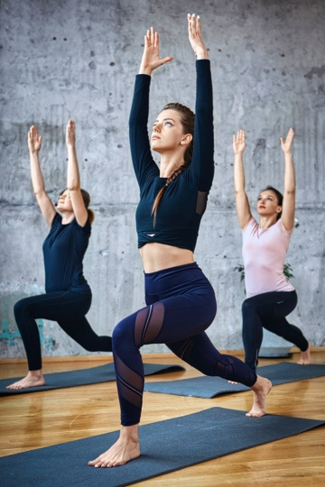
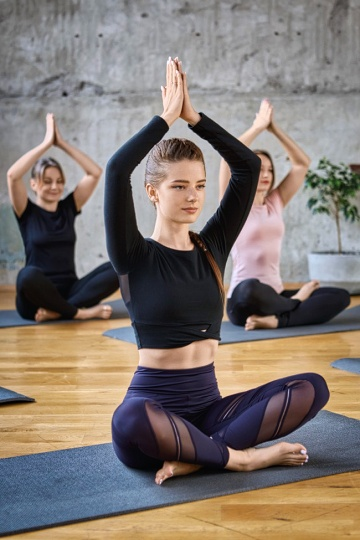

YOGA FOR BEGINNERS

Welcome Beginners!
When you’re brand new to yoga, it can feel intimidating and be difficult to know exactly where and how to get started. Our Yoga for Beginners guide was created specifically for you—to give you all the tips, guidelines, and recommendations you will need to start a successful yoga practice. To ensure your success, we highly recommend you read this entire page before attempting any yoga.
What Is
Yoga?
Yoga is a vast collection of spiritual techniques and practices aimed at integrating
mind, body, and spirit to achieve a state of enlightenment or oneness with the universe. What is
normally
thought of as “yoga” in the West is really Hatha Yoga, one of the many paths of yoga.
The
different
paths of yoga emphasize different approaches and techniques but ultimately lead to the same goal of
unification and enlightenment.Hatha Yoga attains the union of mind-body-spirit through a practice of
asanas
(yoga postures), pranayama (yoga breathing), mudra (body gestures), and shatkarma (internal
cleansing).
These physical practices are used to purify the body and cultivate prana (life-force energy). Modern
Hatha
Yoga does not emphasize many of these esoteric practices and instead focuses more on the physical
yoga
postures.
What Is the Best Yoga for Beginners?
f you are out of shape or extremely inflexible, we recommend you begin with a gentle practice until you have built up the strength and flexibility for more challenging sequences. If you are a relatively fit and flexible person, you should be able to jump right into a regular hatha yoga class. Once you are familiar with the basic postures, you can explore a vinyasa or flow class. We recommend you avoid Ashtanga, Bikram, or hot yoga until you have built up some physical strength and endurance. It is always best to error on the side of caution and safety and approach yoga slowly and carefully.The best way to know if yoga is for you is to give it a try!
Is Yoga Right for You?
Yoga is in no way exclusive—being able to practice yoga does not matter how old you are, how much you
weigh, what you do for a living, where you live, or what religion you practice. Yoga is accessible
for
just about everyone.
If you have a medical condition or a recent injury, it can be
challenging
or dangerous to do certain types of yoga, specific poses, or breathing techniques. Usually, there
are
alternatives or modifications that can allow you to practice safely, and many common complaints have
specific yoga therapy remedies. If you are recovering from an injury or are in poor health, we
recommended consulting with a physician or other qualified health care professional before beginning
yoga.
While you may feel some intensity in the belly of your muscles while in a yoga pose,
you
should never feel pain, especially in the joints. A sharp or intense pain is your body’s signal to
tell
you to stop, back off, and take it easy.
How to
Practice Yoga
Yoga is typically performed in bare feet on a sticky yoga mat with optional yoga props. The yoga
movements and poses require clothes that can stretch and move freely with your body. You can
purchase
clothing specifically designed for yoga practice, but you can probably put together a comfortable
outfit
from your existing wardrobe to get started.
Yoga classes may use additional props, the
most
common being straps, blocks, blankets, and bolsters. You don’t need to purchase these right away as
you
can easily substitute these items with scarves or neckties, a stack of books, and pillows. If you
take
classes at a yoga studio, they will provide everything that you need.
We recommend that you
start with a short and straightforward yoga session and slowly build up from there. Once you feel
comfortable with a few basic beginner yoga postures, you can incorporate them into a sequence and
continue to add more challenging poses. Make sure you learn and follow the essential components of a
yoga practice: breathing, meditation, intention, asanas, and relaxation.
How to Improve After Starting
Patience, commitment, repetition, and consistency are the keys to developing and progressing in the practice of yoga. After you’ve found a style, teacher, and yoga studio that works for you, try these tips:
- Journal the effects a consistent yoga practice has on your body, mind, and heart
- Attend yoga workshops that focus on specific aspects of yoga in more detail
- Increase the length of your practice and the number of days per week that you practice
- Commit to a regular schedule of yoga classes or home practice
- Read and study to learn more about yoga
- Find sources of inspiration
- Make yoga friends and get involved in a community of yogis
- Adopt a yogic lifestyle